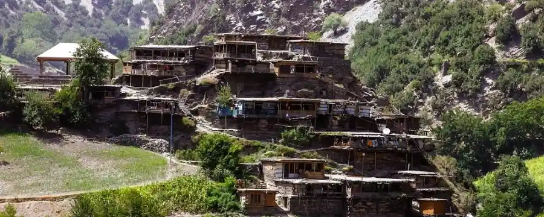

<div class="portfolio-single-load clearfix">
    <div class="custom-full-width-box">
        <div class="custom-container">
            <div class="custom-row align-items-center">
                <div class="custom-image-column">
                    
                </div>
                <div class="custom-text-column">
                    <h2 class="custom-heading">Rambur and Birir Valley</h2>
                    <p class="custom-paragraph">
                        
                        Located 34 kilometers from Chitral city, Biri Valley charms visitors with its lush greenery and tranquil ambiance. Situated at an elevation of 5476 feet, this valley is a sub-region of the Kalash Valley, offering unique natural blessings and scenic landscapes.
                        <br><br>
                        Situated 12 kilometers from Ayun Valley in Chitral, Rumbur Valley mesmerizes visitors with its breathtaking vistas and natural splendor. At an elevation of 7203 feet, this valley is renowned for its confluence of natural beauty, including gentle streams and clear blue skies.

                    </p>
                </div>
            </div>
        </div>
    </div><!-- .custom-full-width-box end -->

</div><!-- end single-project -->
